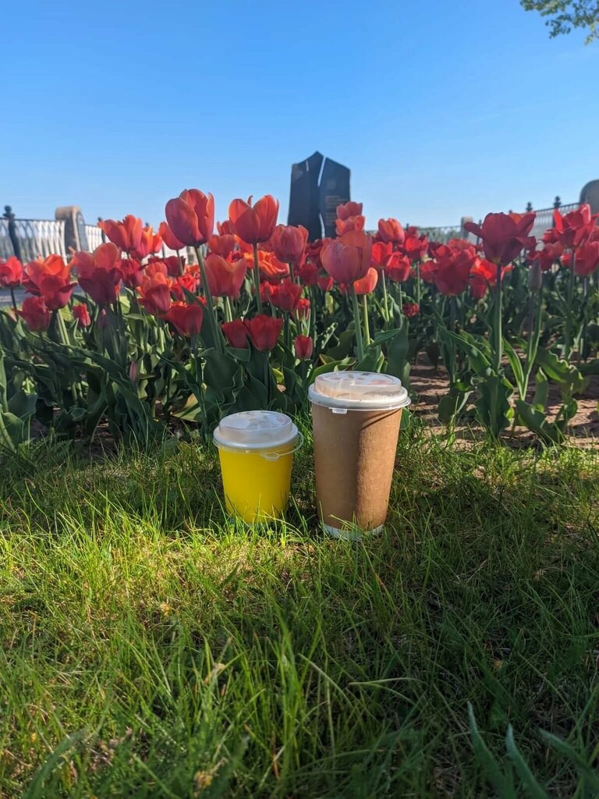
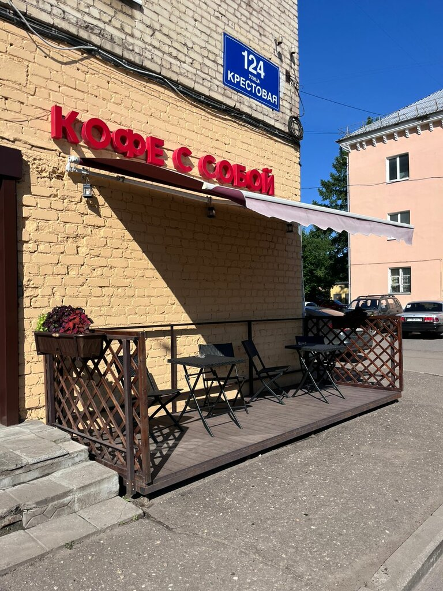

Город,
кофе.
И вы.
Маленькая пауза, которую
хочется взять с собой.

Мгновение из фотоленты кофейни 01 / РЫБИНСК
Та самая вывеска. Тот самый адрес. ↗Не спешите.
Вы уже рядом.
Кофейня «Кофе с собой» — на Крестовой улице в Рыбинске. Заходите за напитком на прогулку или выбирайте паузу на летней веранде.
Вход — с торца здания, со стороны Крестовой. Ориентир — красная вывеска на светлом кирпичном фасаде.
Открыть именно нашу карточку ↗Рыбинск, Россия
У каждого дня
есть своя пауза.
Найдите повод свернуть за кофе.
Кофе в руке.
Город впереди.
В карточке кофейни есть кофе навынос. Возьмите напиток с собой и продолжайте свой маршрут по Рыбинску.
Ещё немного
побыть здесь.
Летняя веранда указана в карточке и видна на фото фасада. Возможность посидеть на улице зависит от сезона и погоды.
Планы лучше,
когда вы вместе.
По данным Яндекс Карт, в кофейню можно с собакой. Детали посещения с питомцем уточните по телефону.
Wi-Fi · Оплата картой
Маленькие
моменты.
Реальные снимки из карточки кофейни.
Нажмите, чтобы рассмотреть.
Фотографии показывают место в разное время. Текущий ассортимент и сезонную работу веранды уточняйте в кофейне.
Ваш кофе —
на Крестовой.
Рыбинск, Крестовая улица, 124Вход с торца здания со стороны Крестовой
+7 (902) 333-80-61 ↗
Точный график на сегодня смотрите в Яндекс Картах
или уточните по телефону перед
визитом.
Ссылка ведёт на конкретное заведение,
а не на поиск по названию.
Где посмотреть меню и цены?+
Актуальные напитки, десерты и цены уточните по телефону +7 (902) 333-80-61 или в карточке Яндекс Карт. На этом концепте нет неподтверждённого меню.
Как найти вход?+
Адрес: Рыбинск, Крестовая улица, 124. Согласно карточке Яндекс Карт, вход расположен с торца здания со стороны Крестовой. На фотографии выше видны вывеска и адресная табличка.
Можно ли зайти с собакой?+
Да, такая возможность указана в карточке кофейни. Условия посещения лучше уточнить у сотрудников перед визитом.
Проверено отдельно · источники и статус концепта↗
Это независимый демонстрационный дизайн, не официальный сайт и не заявление от лица владельца. Проверка проведена 13 ноября 2026 года отдельным агентом по открытым источникам.
- Яндекс Карты — конкретная карточка предприятия: название, адрес, телефон, вход, кофе навынос, веранда, Wi-Fi, оплата картой и возможность посещения с собакой.
- Ayle — дополнительное подтверждение адреса. Телефон в этом справочнике расходится с Яндексом и не использован.
- Собственный сайт в проверенной поисковой выдаче не найден. Это не гарантирует его отсутствия. Действующий статус без звонка владельцу окончательно не подтверждён.
- Фотографии взяты из фотоленты той же карточки Яндекс Карт. Права на снимки принадлежат их авторам; коммерческое использование необходимо согласовать. Фото не являются обещанием текущего ассортимента.
Не публикуются неподтверждённые цены, полный график, доставка, выдуманные отзывы и награды от лица кофейни.
Полный отчёт проверки ↗